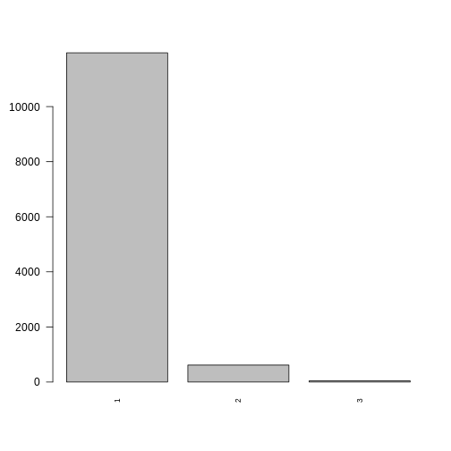
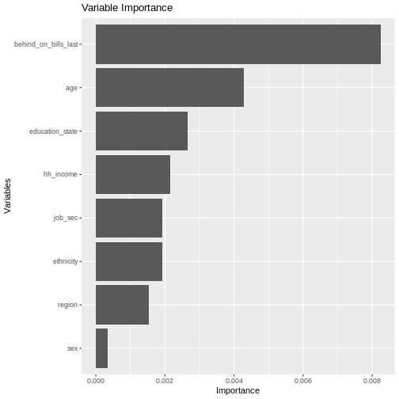
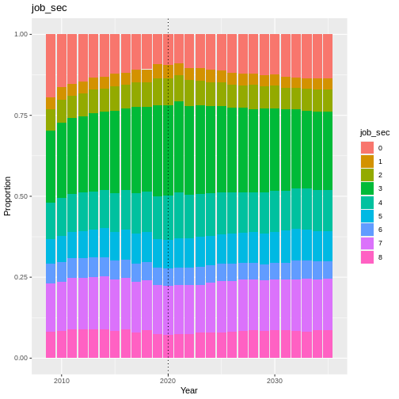
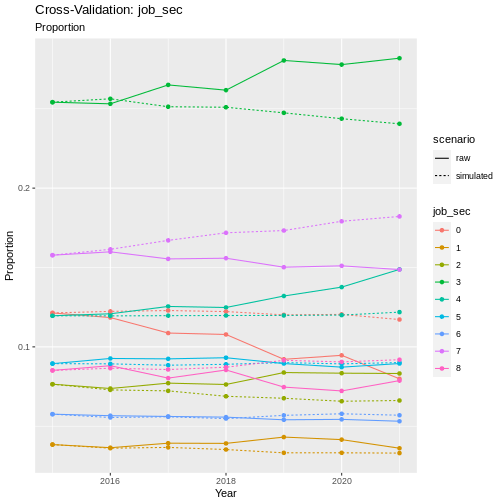
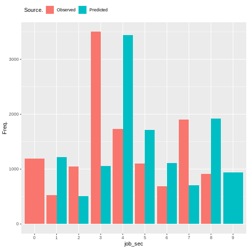
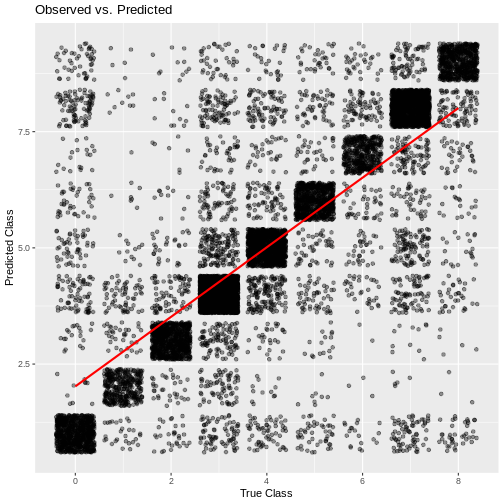

Behind on Bills
Behind on bills is a supplementary module in Minos. It is based on the xphsdba variable from Understanding Society, which represents an individuals ability to pay their bills on time. The individual can then respond to say that they are up to date with all bills (1), behind with some bills (2), or behind with all bills (3).
#discrete_barplot(obs, 'loneliness')
order <- c(1, 2, 3)
discrete_barplot(obs, order)

Fig. 44 plot of chunk bob_data
Transition Model
To predict the next state of behind_on_bills we use a Random Forest Ordinal model from the ranger package in R.
Formula:
plot_rfo_importance(model)

Fig. 45 plot of chunk bob_model_summary
Validation
handover_ordinal(raw.dat, base.dat, v)

Fig. 46 plot of chunk bob_validation
pivoted <- combine_and_pivot_long(df1 = cv,
df1.name = 'simulated',
df2 = raw,
df2.name = 'raw',
var = v)
cv_ordinal_plots(pivoted.df = pivoted,
var = v,
save = FALSE)
## `summarise()` has grouped output by 'time', 'scenario'. You can override using
## the `.groups` argument.

Fig. 47 plot of chunk bob_cv
Results
Random Forest Ordinal models from the ranger package cannot provide a summary like some other models can, so instead we will look at plots of observed vs predicted values as well as the importance of each variable in the resulting model.

Fig. 48 plot of chunk bob_output
cumulative_link_plot(obs, preds)
## `geom_smooth()` using formula = 'y ~ x'

Fig. 49 plot of chunk bob_performance